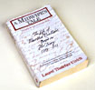

| . |
|
||||||||
| |||||||||
|
 |
Every film begins with an idea. Shortly after Laurel Ulrich's book A Midwife's Tale was published, I (producer/writer Laurie Kahn-Leavitt) read a review of the book, bought a copy, loved it, and called up rights division of Knopf, the publisher, to inquire about optioning the film rights. They told me to speak with Laurel, the author of the book, which I did. And the two of us clicked. From the very beginning, I had the idea of interweaving the story of Martha Ballard's life with Laurel Ulrich's process of piecing it together. The film I imagined would begin as a documentary (with the twentieth century historian and the eighteenth century diary) and evolve into a drama as Ulrich gradually figured out what happened in Martha Ballard's world.
|
||||||||
|
|
It is the job of a film's producer to raise the funding for the film. In this case, it took six years from conception to completion (many films do not take this long -- although some take longer). I raised the initial funding from state humanities councils in Maine, New Hampshire, and Massachusetts, from Tom's of Maine (the toothpaste people), and from several small private foundations. Scripting and production grants came several years later from the public program division of the National Endowment for the Humanities. And the final piece of production funding came from The American Experience, the PBS prime time series on American History.
|
||||||||
|
Researching the Story, Exploring the Archives, Speaking with Scholars |
|||||||||
|
The past is a foreign place, and a film's portrayal of the past depends upon thousands of choices about the physical, behavioral, and cultural details of the period and place being presented. Being authentic or truthful about the past involves much more than getting the costumes and the architectural details right. Shortly after beginning the project, I put together a board of advisors who are expert on the eighteenth century: on women's history, architectural history, medical history, music, and material culture. With their guidance, I plunged into the research. I visited the buildings which are still standing which were part of Martha's world. I visited archives all over Maine, Massachusetts, and New Hampshire and put together a database of thousands of images from the eighteenth century, including handwritten documents, paintings, maps, medical book illustrations, children's book illustrations, newspapers, broadsides, photos of buildings, and the artifacts of everyday life. I found out what had been written about dialects and music and religious beliefs two hundred years ago. I learned as much as I could about the everyday work done by men and women in eighteenth century Hallowell, Maine: textile production, laundry, cooking, farming, surveying, etc. I put together a timeline of Martha Ballard's life and the national and international events that affected her family and her town. And I also spent time talking with Laurel Ulrich about her process of piecing together Martha's life.
|
|||||||||
| Figuring out the Structure of the Film | |||||||||
|
Above: A graph plots the film's intersecting storylines. |
Filmmaking is storytelling, and the principles of story structure apply. Like plays or novels, films have protagonists and antagonists, conflicts, turning points, climaxes, and resolutions. In most films, there is a three-act structure at work. In the case of A Midwife's Tale, I had to interweave two stories: the story of Laurel Ulrich piecing together Martha Ballard's life and the story of Martha Ballard's life itself. To get a handle on each of these stories, I made color coded index cards with scenes I was considering including in the film. Martha's scenes were coded with red. Laurel's scenes were coded with blue. Spreading out the cards on my living room floor, I experimented with different ways to structure the double story. And I began to work out the seasonal cycle metaphor of the film. When I finally worked out something I liked, I drew it up as a story structure graph, with two intersecting story arcs. Laurel's arc (in blue) is dominant at the beginning of the film, and Martha's arc (in red) takes over at the point where the two women connect emotionally in the epidemic scene (the climax of Act I).
|
||||||||
|
Before writing a script, a film writer's first step is often a film treatment -- a detailed description of the film from beginning to end (typically 10-20 pages long). Before asking for the funding to script the film, I wrote a film treatment, using the structure worked out with the story cards and story graph, describing what would happen in the film, and (to some extent) what the film audience would see and hear. Laurel Ulrich read drafts of the treatment, and made suggestions along the way. The project's other historical advisors also read the treatment and offered their advice. Before the treatment was submitted for funding, we convened an all-day meeting of the advisory board of the project -- a day of spirited discussion, detailed historical critique, and brainstorming.
|
|||||||||
| Choosing the Director | |||||||||
|
|
A film director imagines the film from the script, and is then responsible for getting that vision onto the screen. In the case of A Midwife's Tale, I wanted to work closely with the film's director while writing the script. After looking at the work of many documentary and dramatic film directors, I chose Richard P. (Dick) Rogers, who had made films which innovatively and seamlessly mixed documentary and dramatic film elements. When Dick and I met to talk about the film treatment for A Midwife's Tale, he was excited by the challenges the film presented, and happily for me, he signed on.
|
||||||||
| Writing the Script | |||||||||
|
Scriptwriters often work in isolation. In this case, however, I worked closely with Dick Rogers and Laurel Ulrich, who read sections and drafts of the script as it evolved. Laurel's comments focused on the script's presentation of both the past and her research process. Dick's comments focused on the script as a working document to shoot from. Both made numerous suggestions which I incorporated and ran by them (and the project's other advisors).
|
|||||||||
| Budgeting the Film, and Rewriting | |||||||||
|
Above: The preliminary budget. |
The process of budgeting a script often leads to rewrites -- and subsequent revisions of the budget. On A Midwife's Tale hard choices had to be made to cut some scenes (like the house-raising for the Ballard's new house) while other scenes were retained because it was felt they were essential to the historical and dramatic truthfulness of the film (the parade, the scene in church, for example). The initial film budget was an educated approximation based on assumptions about locations, cast and crew. Having worked on documentary films with a crew of five, budgeting for a dramatic shoot with a cast and crew of hundreds was a deep-end learning experience!
|
||||||||
| Video Workshop | |||||||||
|
Top: Dissection scene from the video workshop. Above: Dissection scene from the film A Midwife's Tale. |
Because shooting film is
so expensive, experimenting in video first is extremely economical.
After submitting the
script for funding, Dick Rogers and I decided to organize a video workshop
(using a Hi8 video camera). We auditioned local stage actors, offered
them a free workshop, created a small ensemble, and got to work in a barn
in Lincoln, Massachusetts (kindly loaned to us by the Society for the
Preservation of New England Antiquities). There we shot whole sections
of the film, using available light, makeshift props and costumes. We tried
all kinds of things we would not have dared to do if we were shooting
film and paying for a full film crew. (We even tried casting a real midwife
to play Martha Ballard one day. She was fabulous in a delivery scene but
wooden in others, convincing us we needed to cast actors.) Dick tried
shooting the film in different ways. I let the actors improvise lines.
I rewrote dialogue. And we even edited small segments of the film on the
spot to see how they played. The workshop was a critical learning tool
for the film's production phase; in effect, it served as a video sketchbook
for the project.
|
||||||||
| Shooting a Sample Reel | |||||||||
| Potential funders
often want to see a sample of the film they are being asked to fund .
In this case, the project was asked to make a sample reel by the National
Endowment for the Humanities, which told the project " it was strongly suggested
(by the panel) that the project was too risky and expensive to proceed without
testing the concept, with a sample or pilot reel to enable the producers
to experiment with their vision and make any necessary adjustments." Instead
of shooting a slick trailer, Dick Rogers and I decided to present a segment
of the film (the epidemic) that would be able to stand on its own and also
demonstrate the film's interweaving of doc and drama, the issue that most
concerned the NEH. Because of our tight budget for the sample reel, and
the necessity of putting all of our money "on the screen" (as versus into
hotels or meals), we decided to shoot the reel within a one hour drive of
either Boston or New York, so that cast and crew would not require hotel
rooms and three meals a day. So where did we end up shooting this mid-summer,
sweltering hot epidemic which took place two hundred years ago on the frontier
of Maine? ........in Staten Island, in December! As is true of any dramatic film, a small army of people were mobilized, scheduled, equipped, and fed. The art department transformed the rooms of two period buildings at Staten Island's Historic Richmondtown into what appeared to be five different homes on the frontier. |
|||||||||
|
Above: Research notes on eighteenth-century medicine. |
Difficult concrete historical questions arose when preparing to put Martha's physical world up on the screen. When Martha applied onions to the feet to draw out a fever (something we know from her diary), were they raw or cooked? Did she apply them to the top of the foot or to bottom of the foot? Medical scholars didn't know, so we asked several modern herbalists, who told us they use raw onion on the ball of the foot. That was the basis of our educated guess. Did Martha say "Mistress" or "Misses" for the written "Mrs" in her diary? We know this was a time of transition between the two pronunciations. But which would Martha use? We feared modern audiences would incorrectly associate the use of "Mistress" with a relation of servitude, so we went with "Misses." Kaiulani Lee, the actress playing Martha, turned to Dick during a scene in which she is called in to help the Rev. Mr. Foster, who is sick with scarlet fever. "Do I roll up his sleeve? Do I look in his throat? Or do I keep a more respectful distance?" Dick turned to me. I turned to Laurel. Laurel said she didn't know. We got on the phone with several of her colleagues to get their take on the situation, and they were split. Most of the men felt that Martha would keep her distance. Most of the women felt that Martha would have inspected the minister. Dick shot it both ways, and we made the final decision in the editing room.
|
||||||||
| Casting | |||||||||
|
|
Casting is always critical.
And in this film it was especially important.
We knew A Midwife's
Tale would sink or swim with the casting of Martha Ballard. The character
of Martha Ballard (as we conceived it but I think probably in reality,
too) was a very non-modern combination of warmth and reticence. We auditioned
many accomplished, first-rate actresses. But something interesting happened.
The actresses who understood the warmth in Martha's character tended to
tip into sentimentality. And the ones who understood the reticence in
her character tended to tip into cool detachment. Kaiulani Lee, however,
nailed the part when she auditioned. She is talented, and strong, and
remarkably expressive in her physical movements. For a script like ours,
she was perfect. Our only reservation was her age. And we ultimately handled
that by splurging on special effects makeup artists flown in from LA.
|
||||||||
| Finding a Location to Shoot the Film | |||||||||
|
Above: Composite photomosaics of indoor locations. |
Films can be shot on sound stages and sets -- or on real locations. Early on, the decision was made to shoot A Midwife's Tale in real locations because building sets from scratch would be too expensive. Once we got our production money, our first step was to find a single place where we could shoot the rest of the dramatic scenes for the film. (On our budget, we couldn't afford to waste a day with hundreds of paid cast and crew, and trucks of equipment -- merely moving them from location to location.) The director Dick Rogers, the production designer Nancy Deren, and I scouted locations all over Maine, New Hampshire, Vermont, Massachusetts, and upstate New York. We took photos of the locations we visited, and made composite photo mosaics which are a filmmaker's way of record-keeping and remembering locations. But there was no single place that had a wide river like the Kennebec (the river that runs through Hallowell/Augusta Maine), a functional eighteenth century sawmill, a variety of farmhouses and outbuildings, fields, and forest. When our architectural advisor, Richard Candee, told us he'd heard about, but never visited a place called King's Landing in New Brunswick, Canada, Dick, Nancy, and I made the trip. And we were amazed. King's Landing (a settlement which includes houses built by Loyalists escaping the American Revolution) had a wide river, a sawmill, lots of buildings, outbuildings, fields, animals, and woods. We felt we had walked onto a $30 million set that was almost (but not quite) designed with our film in mind!
|
||||||||
| Designing Physical Spaces, Costumes, and the "Look" of the Film | |||||||||
|
|
The production designer works closely with the director, the director of photography, and the costume designer. Together, they decide on "the look" of the film. On A Midwife's Tale, they began by looking at images of everyday life in American and European paintings and engravings from the period. They also looked at photographs of 20th century rural life and photographs of the Colonial Revival -- from the early part of this century. They used these images with caution, since the Colonial Revival often romanticized the past, and modern rural life is different in many ways than it was in Martha's time. But valuable lessons were gleaned from all of these images -- about the quality of light, the kinds of disarray or tidiness in a rural home, the look of smoke-stained walls, the kinds of objects typically left on mantle pieces, and hundreds of other details. Together the director, DP (director of photography), and production designer chose the palette for specific scenes and sets. Director Dick Rogers and DP Peter Stein conducted experiments with different kinds of lighting. Working with Dick and Peter, production designer Nancy Deren drew up ground plans showing how the buildings and gardens at Kings Landing could be adapted to match the script and enhance Dick's directing choices. Meanwhile, costume designer Kim Druce coordinated her costume plans with their choices, and drew up costume sketches.
|
||||||||
| Rewriting and preparing the final shooting script | |||||||||
|
The final budget and final shooting script are prepared in tandem. Once we knew which specific locations we would be using, and received our final funding commitments, we could budget the film with some precision. We then decided which scenes had to be axed (because their function in the film did not justify their expense) and which scenes could be rewritten to accommodate locations we would be working in.
|
|||||||||
| Scheduling | |||||||||
|
Scheduling a film is a complicated juggling act. On A Midwife's Tale, everything had to age over the twenty-seven year time span covered in the film: the buildings, the props, the costumes, even the actors. The seasons had to change (or be faked), the actors' schedules had to be worked around (and union rules tied our hands in many ways), technical considerations had to be taken into account -- and many of these requirements were in conflict with one another. The first and second assistant directors, Rich Greenberg and Adam Escott, continually tweaked the shooting schedule to maximize our efficiency, taking into account the weather, illnesses, and other unpredictable events.
|
|||||||||
|
A dramatic film crew is typically divided into departments. About a month before shooting at Kings Landing in New Brunswick, Canada, the line producer and producer hired the people still needed to fill in the various departments: the directing department (assistant directors, script supervisor, extras supervisor); the camera department (camera operators, lighting -- gaffers, dollies and heavy equipment -- grips); the art department (production designer, prop managers, scenic designers, carpenters, set decorators and dressers); the sound mixer; costume, hair and makeup. In addition, a line producer needs to hire caterers, and lots of production assistants. Because Kings Landing closed for the winter in October, just before we began shooting, we were able to offer employment to their laid-off seamstresses, carpenters, painters, and groundskeepers. (We also hired many of their historical interpreters as extras; they knew how to spin, weave, run the sawmill, and do other kinds of eighteenth-century work.)
|
|||||||||
|
{kind=link}
{kind=link}
{kind=link}
{kind=link}
{kind=link}
{kind=link}
{kind=link}
{kind=link}